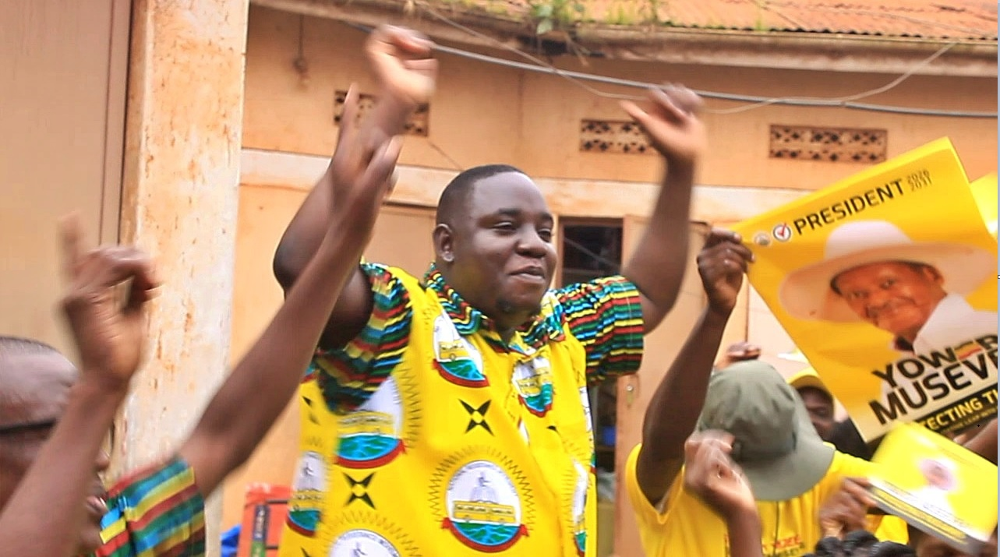

MIXED REACTIONS: Kasangati Community Responds to President’s Inauguration Speech
On Tuesday, May 12, Uganda witnessed the inauguration of President Yoweri Kaguta Tibuhaburwa Museveni. This milestone marks 40 years of his leadership at the helm of the country. In a speech that set the tone for the new five-year term, the President emphasized that this would be a "No Sleep, No Corruption" term—a strategic driver aimed at lifting all Ugandans out of poverty.

A delegation of community members and NRM supporters from Kasangati Town Council traveled to Kololo to witness the ceremony firsthand. Upon their return, many shared a sense of awe regarding the displays of national strength and innovation.

NRM Mobilizer, Kasangati
"I have seen amazing things. The standard of security weaponry we have is top-class. I saw a display of great innovative projects that are transforming the country. President Museveni has informed us this is a 'No Sleep' term. We must work hard and ensure we use government support projects like the PDM properly to come out of poverty."
Not everyone shared the same unbridled optimism. Some community members who preferred to remain anonymous raised questions about the transition from the previous "Hakuna Muchezo" term to the current "No Sleep" mandate.
"Previously, the message was that the NRM brought peace so we can sleep. Now it looks like we have over-slept, and it is time to work. It is a great wake-up call, but the challenge is implementation. Often, what we see being said on TV doesn't reach the lower levels in action. We are waiting to see if this shift actually reaches Kasangati."
The President's focus on "No Corruption" remains the most watched promise, as local citizens hope for more accountability in the distribution of funds at the sub-county and town council levels.
WHAT IS YOUR THOUGHT?
The "No Sleep, No Corruption" Term: Is it the right strategy for Uganda's future? We want to hear from you!
SEND US YOUR COMMENT